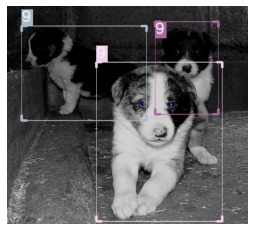

Exdark
%load_ext autoreload
%autoreload 2
Data: https://github.com/cs-chan/Exclusively-Dark-Image-Dataset/tree/master/Groundtruth
from icevision.all import *
data_dir = Path('/home/lgvaz/.icevision/data/exdark')
# class map needs to be a 3 way mapping
# names -> real_id
# names -> model_id
# model_id -> names
Scratch
object_classes = [None, "Bicycle", "Boat", "Bottle", "Bus", "Car", "Cat", "Chair", "Cup", "Dog", "Motorbike", "People", "Table"]
lightning_classes = [None, "Low", "Ambient", "Object", "Single", "Weak", "Strong", "Screen", "Window", "Shadow", "Twilight"]
location_classes = [None, "Indoor", "Outdoor"]
object_class_map = ClassMap(object_classes, background=None)
lightning_class_map = ClassMap(lightning_classes, background=None)
location_classes = ClassMap(location_classes, background=None)
instances_annotations_dir = data_dir / 'instances_annotations'
classification_annotations_dir = data_dir / 'classification_annotations'
imgs_dir = data_dir / 'images'
instances_annotations_filepaths = get_files(instances_annotations_dir, extensions=['.txt'])
classification_annotations_filepath = classification_annotations_dir / 'imageclasslist.txt'
classification_annotations_filepath
instances_fp = instances_annotations_filepaths[5236]
instances_fp
img_filepath = imgs_dir / instances_fp.parent.stem / instances_fp.stem
img_filepath
instances_lines = instances_fp.read_text().strip().split('\n')[1:]
instances_lines
instances_lines = instances_fp.read_text().strip().split('\n')[1:]
line = instances_lines[0]
tokens = line.split()
object_class = tokens[0]
xywh = [int(coord) for coord in tokens[1:5]]
bbox = BBox.from_xywh(*xywh)
object_class, bbox
instances_fp.stem
classification_lines = classification_annotations_filepath.read_text().strip().split('\n')[1:]
classification_lines = classification_annotations_filepath.read_text().strip().split('\n')[1:]
line = classification_lines[0]
tokens = line.split()
filename = tokens[0]
object_class, lightning, location, _ = [int(id) for id in tokens[1:]]
## Add to respective tasks
# TODO: How to handle multilabel
Path('/home/lgvaz/.icevision/data/exdark/classification_annotations/imageclasslist.txt')
Path('/home/lgvaz/.icevision/data/exdark/instances_annotations/Dog/2015_05235.jpg.txt')
Path('/home/lgvaz/.icevision/data/exdark/images/Dog/2015_05235.jpg')
['Dog 245 292 247 167 0 0 0 0 0 0 0']
('Dog', <BBox (xmin:245, ymin:292, xmax:492, ymax:459)>)
'2015_05235.jpg'
Parser
object_class_task = tasks.Task('object_class')
lightning_task = tasks.Task('lightning')
location_task = tasks.Task('location')
template_record = BaseRecord((
FilepathRecordComponent(),
InstancesLabelsRecordComponent(),
BBoxesRecordComponent(),
ClassificationLabelsRecordComponent(task=object_class_task),
ClassificationLabelsRecordComponent(task=lightning_task),
ClassificationLabelsRecordComponent(task=location_task),
))
# Parser.generate_template(template_record)
# TODO: Use splits specific in imageclasslist.txt
class ExDarkParser(Parser):
def __init__(self, template_record, instances_annotations_dir, classification_annotation_filepath, imgs_dir):
super().__init__(template_record=template_record)
self.instances_annotations_dir = instances_annotations_dir
self.classification_annotation_filepath = classification_annotation_filepath
self.imgs_dir = imgs_dir
self.instances_annotations_filepaths = get_files(instances_annotations_dir, extensions=['.txt'])
self.classification_annotation_lines = classification_annotation_filepath.read_text().strip().split('\n')[1:]
object_classes = [None, "Bicycle", "Boat", "Bottle", "Bus", "Car", "Cat", "Chair", "Cup", "Dog", "Motorbike", "People", "Table"]
lightning_classes = [None, "Low", "Ambient", "Object", "Single", "Weak", "Strong", "Screen", "Window", "Shadow", "Twilight"]
location_classes = [None, "Indoor", "Outdoor"]
self.object_class_map = ClassMap(object_classes, background=None)
self.lightning_class_map = ClassMap(lightning_classes, background=None)
self.location_class_map = ClassMap(location_classes, background=None)
def __iter__(self) -> Any:
for line in self.classification_annotation_lines:
yield line, tasks.classification
for filepath in self.instances_annotations_filepaths:
yield filepath, tasks.detection
def __len__(self):
return len(self.instances_annotations_filepaths) + len(self.classification_annotation_lines)
def record_id(self, o) -> Hashable:
item, task = o
if task == tasks.detection:
return Path(item.stem).stem # item is `2015_05235.jpg.txt`, stem will give `2015_05235.jpg`, stem again for `2015_05235`
if task == tasks.classification:
return Path(item.split()[0]).stem # will also give `2015_05235`
# before were using with file extension, but one can have .JPG while the other .jpg
def parse_fields(self, o, record, is_new):
item, task = o
if task == tasks.detection:
self.parse_detection(item, record)
elif task == tasks.classification:
self.parse_classification(item, record)
else:
raise ValueError
def parse_detection(self, filepath, record):
# the following doesn't work, filepath.stem can be `2015_00391.jpg` but actual image name is `2015_00391.JPG`
# img_filepath = self.imgs_dir / filepath.parent.stem / filepath.stem
# record.set_filepath(img_filepath)
# record.set_img_size(get_img_size(img_filepath))
record.detection.set_class_map(self.object_class_map)
lines = filepath.read_text().strip().split('\n')[1:]
for line in lines:
tokens = line.split()
object_class = tokens[0]
xywh = [int(coord) for coord in tokens[1:5]]
bbox = BBox.from_xywh(*xywh)
record.detection.add_labels([object_class])
record.detection.add_bboxes([bbox])
def parse_classification(self, line, record):
tokens = line.split()
img_name = tokens[0]
object_class, lightning, location, _ = [int(id) for id in tokens[1:]]
# common
object_class_name = self.object_class_map.get_by_id(object_class)
filepath = self.imgs_dir / object_class_name / img_name
record.set_filepath(filepath)
record.set_img_size(get_img_size(filepath))
# classification
record.object_class.set_class_map(self.object_class_map)
record.object_class.add_labels_by_id([object_class])
record.lightning.set_class_map(self.lightning_class_map)
record.lightning.add_labels_by_id([lightning])
record.location.set_class_map(self.location_class_map)
record.location.add_labels_by_id([location])
parser = ExDarkParser(
template_record=template_record,
instances_annotations_dir=data_dir/'instances_annotations',
classification_annotation_filepath=data_dir/'classification_annotations/imageclasslist.txt',
imgs_dir=data_dir/'images',
)
train_records, valid_records = parser.parse(autofix=True, cache_filepath='exdark_records')
record = train_records[2]
record
[1m[1mINFO [0m[1m[0m - [1mLoading cached records from exdark_records[0m | [36micevision.parsers.parser[0m:[36mparse[0m:[36m126[0m
BaseRecord
from icevision.visualize.draw_data import _draw_label
def draw_exdark_record(record):
img = draw_record(record)
img = _draw_label(img, record.lightning.labels[0], 10, 10, font_size=30, color="#C4C4C4", border_color="#020303")
img = _draw_label(img, record.location.labels[0], 10, 40, font_size=30, color="#C4C4C4", border_color="#020303")
return img
def show_exdark_record(record, ax=None, figsize=None):
img = draw_exdark_record(record)
show_img(img=img, ax=ax, figsize=figsize)
def show_exdark_records(records, ncols=1, figsize=None):
partials = [partial(show_exdark_record, record=record) for record in records]
plot_grid(partials, ncols=ncols, figsize=figsize, show=True)
records = random.choices(train_records, k=6)
show_exdark_records(records, ncols=2)
common:
- Image ID: 5145
- Filepath: /home/lgvaz/.icevision/data/exdark/images/Dog/2015_05144.jpg
- Image: None
- Image size ImgSize(width=637, height=397)
location:
- Labels: [2]
detection:
- BBoxes: [<BBox (xmin:367, ymin:212, xmax:437, ymax:265)>]
- Labels: [9]
lightning:
- Labels: [4]
object_class:
- Labels: [9]

record.object_class.labels
record.lightning.labels
show_record(record)
